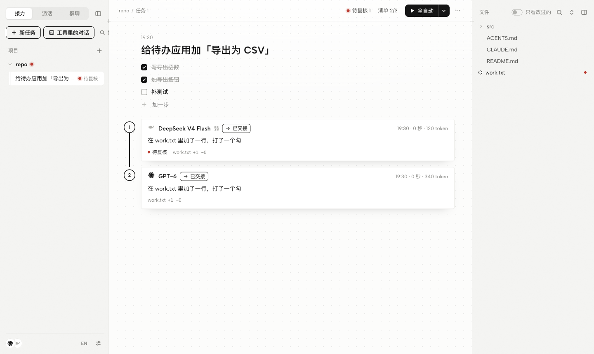

RelayDesk · 接力台多模型编程协作平台 · 2026.10 至今
用 AI 写代码，额度会用完，模型会卡住，它说「做完了」也没法核实。接力台把一次开发拆成一棒一棒：一个模型停下，下一个带着交接单接着做；每一棒都留文件快照，可以复核，也可以退回。


- 换模型继续读取 Claude Code / Codex 的本地会话，还原对话主线，带着上下文交给另一个模型接手
- 强弱分工强模型拆任务、弱模型执行、强模型复核；额度用完自动换人，失败可退回任意一棒的快照
- 群聊决策多个模型匿名出方案、互投（不能投自己），主席汇总后写进约定，之后每一棒都遵守
- 安全设计项目内容一律当作不可信：检查命令要本机确认，拒绝借符号链接写到项目外，发给模型前抹掉密钥